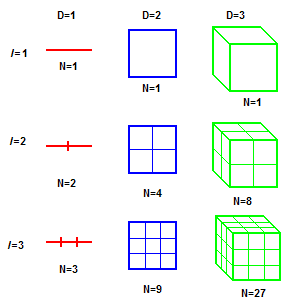

A couple months ago I came across the intersting topic of fractals - in particular, fractal dimensions.
Introduced by Benoit Madelbrot in 1967, he discussed the term fractal dimensions when describing how to calculate the length of Britains coastline. He cited previous works that explained that when trying to calculate the length of a coastline, the measured length will change depending on the length of the measuring stick used. This is sort of what the fractal dimension encapsulates - it quantifies complexity by describing the ratio of the change in detail to the change in scale.
Understanding the Theory
To best explain it, let's talk through an example. Consider an animals movement. On one extreme, the movement can be linear, where the fractal dimension is \(d = 1\). On the other extreme, the movement can be entirely random - almost similar to Brownian motion where the fractal dimension is \(d = 2\). Realistically, an animals path is neither of these and is actually in the middle where some sort of natural intuition guides the animal move on a particular path. As such the value of the fractal dimension is then inbetween \(d = 1\) and \(d = 2\). If we think about what this means spatially, it means that when we trace the animals path, the final image becomes less like a line and more like a plane. This idea can be extended to 2D vs 3D where a path becomes less like a plane and more like an space, but this then becomes slightly harder to conceptualise.
So how do we calculate the fractal dimension? We calculate the fractal dimension, \(d\), using the following equation: $$ d = -\frac{\log{N}}{\log{\epsilon}} $$ Where \(N\) is the number of individual segments the shape can be broken into and \(\epsilon\) is the scaling factor.
Example

The figure above displays how we can use the equation. So say we have a square that has been scaled down by 3, we can fit 9 of those squares into the original square and thus \(N = 9\) and \(\epsilon = \frac{1}{3} \). The fractal dimension, \(d\) is... $$ d = -\frac{\log{N}}{\log{\epsilon}} $$ $$ d = -\frac{\log{9}}{\log{\frac{1}{3}}} $$ $$ d = 2 $$
Concluding Remarks
Here, I've introduced the fractal dimension which is a subset of the topic of fractals. This field is incredibly complex and will need a lot more posts to discuss it in depth. If you are interested in learning more about fractals and the fractal dimension, I recommend the following articles:
Mandelbrot, B., 1967. How Long Is the Coast of Britain? Statistical Self-Similarity and Fractional Dimension. Science, 156(3775), pp.636-638.
Turchin, P., 1996. Fractal Analyses of Animal Movement: A Critique. Ecology, 77(7), pp.2086-2090.